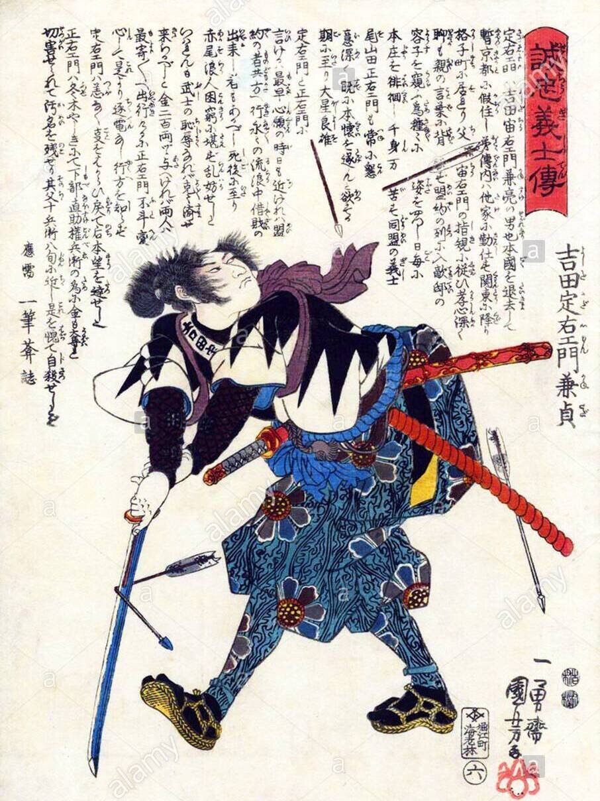

Rising Suicide Rates
Suicide rates in Japan has been increasing at an alarming high rate, and it is almost unknown to the general public. The leading factor to cause these deaths are usually something along the lines of responsibility and finance.
Since World War II, Japan economy, although large, has been in shackles in terms of employment. Around the 2010's, Japan has a record high jobless raate, striking at around 5%. This has also directly increased the Gini coefficient of the country, which has been proven to impact the suicide rate in Japan.
Even if you have a job in Japan, suicide is still a influencing power. Out of 2207 work related suicides in 2007, 672 was due to overwork, the most common reason within.
A reason for this overwork is the amount of pressure Japanese banks place on the borrower's and their loans. If unable to play back the price, banks actaully force the borrowers to use relatives and friends as guarantors who become responsible for loans, creating extreme guilt and despair for the borrower. These over whelming work loads sometimes forces livese to be taken away.
Overall, the government and the economy has devestating influence on the suicide numbers in Japan, and such an issue is currently surprisingly not severely addressed by the government.
Overworked employees are often found sleeping or resting in public areas. The picture to the left shows a few of big percentage.
/* Culture impact Section */Cultural Influences
Suicide in Japan is "elevated to the level of an esthetic experience" via cultural and historical influences. It is deemed 'tolerant' and even 'honorable' to take you own life. This type of suicide is called seppuku, and was common amung the Samurais, Edo Japan and when Japan was ever in conflict (such as World War II). In fact, suicide bombers were commonly deployed by the Japanese, and the pilots are thought to have 'honorable deaths' for their country. This act was common when you were met with a terminal defeat or commiting a severe crime, despite of your emotions.
Stories are common about how a samurai would kill someone to avenge another person, then take their own life afterwards. A more common example can be found on Wikipedia, where it states "While being investigated for an expenses scandal, Cabinet minister Toshikatsu Matsuoka took his life in 2007. The former governor of Tokyo, Shintaro Ishihara, described him as a "true samurai" for preserving his honour."

The poem above is from a powerful story of a samurai's honour and respect in Edo Japan, resulting in Seppuku